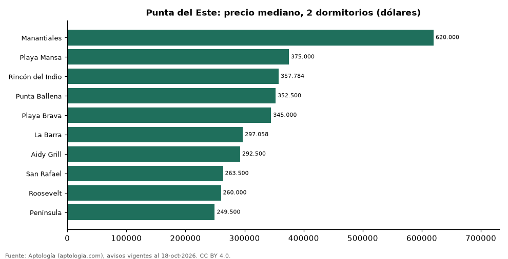

Dónde cuesta más y menos comprar un apartamento de 2 dormitorios en Punta del Este: ranking de barrios (octubre 2026)
Estudio con datos abiertos (CC BY 4.0). Versión original: https://github.com/elbroker/aptologia-datos/tree/main/estudios/venta-apartamentos-de-2-dormitorios-por-barrio-punta-del-este-2026 · DOI: 10.5281/zenodo.23528857
En Punta del Este, un apartamento de 2 dormitorios cuesta USD 620.000 en la mediana en Manantiales, el barrio más caro, y USD 249.500 en Península, el más barato: 2,5 veces menos. Comparamos 10 barrios con al menos 30 avisos de 2 dormitorios.
Resumen: analizamos 1.757 apartamentos en venta de 2 dormitorios en 10 barrios de Punta del Este.
Actualizado: 18 de octubre de 2026 (datos del 18 de octubre de 2026) · Próxima actualización: mensual.

Resumen
| Indicador | Valor |
|---|---|
| Más caro | Manantiales: USD 620.000 |
| Más barato | Península: USD 249.500 |
| Diferencia | 2,5 veces |
| Barrios | 10 |
Precio de un apartamento de 2 dormitorios por barrio
| Barrio | Precio (mediana) | Rango típico (P25–P75) | Área mediana (m²) | Avisos |
|---|---|---|---|---|
| Manantiales | USD 620.000 | USD 495.000 – USD 727.000 | 126 | 50 |
| Playa Mansa | USD 375.000 | USD 290.000 – USD 451.250 | 92 | 440 |
| Rincón del Indio | USD 357.784 | USD 260.500 – USD 438.925 | 115 | 39 |
| Punta Ballena | USD 352.500 | USD 277.500 – USD 450.000 | 109 | 72 |
| Playa Brava | USD 345.000 | USD 287.130 – USD 450.000 | 102 | 418 |
| La Barra | USD 297.058 | USD 260.000 – USD 363.750 | 82 | 78 |
| Aidy Grill | USD 292.500 | USD 250.000 – USD 350.000 | 82 | 178 |
| San Rafael | USD 263.500 | USD 220.000 – USD 344.962 | 82 | 42 |
| Roosevelt | USD 260.000 | USD 210.384 – USD 295.000 | 80 | 214 |
| Península | USD 249.500 | USD 200.000 – USD 313.750 | 75 | 226 |
Medianas del precio pedido; solo barrios con 30 avisos o más.
Preguntas frecuentes
¿Cuánto cuesta comprar un apartamento de 2 dormitorios en Manantiales? USD 620.000 en la mediana (octubre de 2026); la mitad central entre USD 495.000 y USD 727.000.
¿Dónde es más barato comprar un apartamento de 2 dormitorios en Punta del Este? En Península: USD 249.500 en la mediana.
Metodología
- Fuente: exportes nocturnos de la base de datos de Aptología (aptologia.com) del 18 de octubre de 2026: avisos vigentes de vivienda en portales inmobiliarios de 13 países, recogidos por Aptología y vistos en línea entre el 11 y el 18 de octubre de 2026. Corte: 18 de octubre de 2026.
- Depuración: se eliminan duplicados exactos (misma ciudad, zona, tipo, precio, moneda, área, habitaciones y baños) y los precios fuera del percentil 1–99 de cada país, operación, moneda y tipo; el precio por m² usa solo avisos con área declarada entre 12 y 2.000 m² y también se recorta al P1–P99.
- Qué se mide: precios pedidos (publicados), no precios de cierre. En arriendo, el canon mensual sin administración, gastos comunes ni condominio.
- Muestra mínima: cada cifra publicada se apoya en al menos 30 avisos; las celdas con menos se omiten.
- Monedas: nunca se mezclan avisos de monedas distintas sin convertirlos. Conversión a dólares con la tasa de mercado de ExchangeRate-API (open.er-api.com, actualización del 18 Oct 2026): 1 USD = 3.182,80 COP, 1 USD = 18,47 M.N, 1 USD = 5,09 BRL, 1 USD = 3,44 PEN, 1 USD = 982,44 CLP, 1 USD = 1.514,57 ARS, 1 USD = 40,20 UYU, 1 USD = 5.705,37 PYG, 1 USD = 61,27 DOP, 1 USD = 0,89 EUR, 1 USD = 11,72 BOB; la UF chilena a 41.178,64 CLP (mindicador,cl. 18-oct-2026). Los avisos publicados en dólares se usan tal cual.
- Monedas: en cada ciudad y operación se usa solo la moneda mayoritaria de los avisos (los avisos en otra moneda se excluyen) y la mediana se convierte a dólares con la tasa citada; nunca se promedian avisos de monedas distintas.
- Limitaciones: la cobertura depende de los portales que recorre Aptología en cada país y es mayor en las ciudades grandes y en los segmentos medio-alto y alto; el área es la que declara el aviso, sin verificar; los nombres de zona vienen de los portales.
- Privacidad: solo se publican agregados; no se publica ningún dato personal, enlace a avisos ni nombre de anunciante.
- Datos abiertos: datos.csv, licencia CC BY 4.0.
Cómo citar
Pinzón Pineda, D. M. (2026). Dónde cuesta más y menos comprar un apartamento de 2 dormitorios en Punta del Este: ranking de barrios (octubre 2026). Aptología (aptologia.com). https://github.com/elbroker/aptologia-datos/tree/main/estudios/venta-apartamentos-de-2-dormitorios-por-barrio-punta-del-este-2026. Datos: datos.csv, licencia CC BY 4.0.